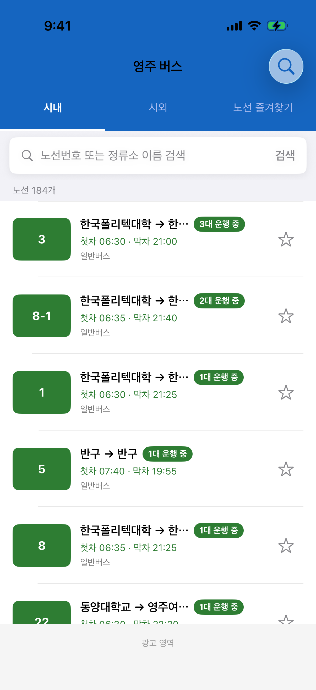
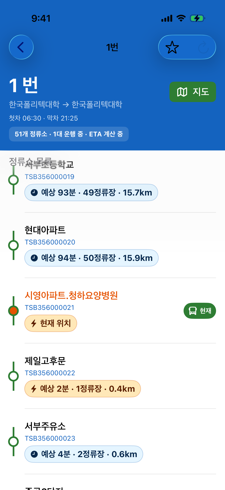

iOS · iPhone
영주 버스 정보
영주 시내버스 실시간 운행과 도착 예상, 시외·고속버스 시간표를 iPhone에서 빠르게 확인하세요.
핵심 가치
- 실시간 운행 확인 — 운행 중 노선을 먼저 보여 주고 운행 대수를 함께 표시합니다.
- 빠른 검색 — 노선번호 또는 정류소 이름으로 즉시 탐색합니다.
- 도착 예상(ETA) — 노선 상세에서 정류소별 예상 도착 시간과 버스 현재 위치를 확인합니다.
- 한 화면 정보 — 시내·시외·즐겨찾기를 탭으로 전환하며 확인합니다.
주요 기능 (iOS)
시내 버스 노선
운행 중·미운행 상태를 구분해 표시하고, 첫차·막차·배차 정보를 함께 확인합니다.
운행 중·미운행 상태를 구분해 표시하고, 첫차·막차·배차 정보를 함께 확인합니다.
노선 상세 · 도착 예상
정류소 목록에서 버스 현재 위치를 강조 표시하고, 다음 정류소까지 예상 시간을 제공합니다.
정류소 목록에서 버스 현재 위치를 강조 표시하고, 다음 정류소까지 예상 시간을 제공합니다.
정류소 도착 정보
정류소를 선택하면 해당 정류소에 도착 예정인 버스 목록을 확인합니다.
정류소를 선택하면 해당 정류소에 도착 예정인 버스 목록을 확인합니다.
검색 · 즐겨찾기
자주 이용하는 노선을 저장하고, 노선번호·정류소 이름으로 빠르게 검색합니다.
자주 이용하는 노선을 저장하고, 노선번호·정류소 이름으로 빠르게 검색합니다.
노선 지도
노선 경로와 버스 위치를 지도에서 확인하고, 필요 시 외부 지도 앱으로 연동합니다.
노선 경로와 버스 위치를 지도에서 확인하고, 필요 시 외부 지도 앱으로 연동합니다.
시외·고속버스 시간표
영주 출발 시외·고속버스 시간표를 앱 안에서 확인합니다.
영주 출발 시외·고속버스 시간표를 앱 안에서 확인합니다.
화면 미리보기


대상 사용자
영주 시민, 출퇴근·통학 이용자, 영주를 방문하는 여행객, iPhone으로 버스 정보를 확인하려는 모든 사용자에게 적합합니다.
본 페이지는 영주 버스 iOS 앱을 소개합니다. Android 버전은 별도 Google Play 앱으로 제공됩니다.
앱 정보
- 앱 이름: 영주 버스 정보
- 홈 화면 이름: 영주 버스
- 플랫폼: iOS (iPhone)
- 최소 OS: iOS 16.0
- Bundle ID:
com.DGY.Youngjo.Bustable - 개발: DGY Creative Lab